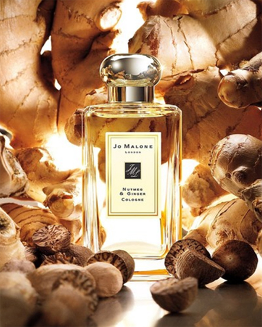

- 조말론 기원
- 자선활동
- 센트 스토리

- 
조말론 런던 1호점과 조말론 런던의 첫 번째 향이었던 '너트맥 앤 진저'
조 말론의 역사
조 말론 런던은 1994년 조향사 조 말론이 런칭한 럭셔리 뷰티 브랜드이다. 월턴 스트리트 154번가 에서 첫 부티크를 오픈하면서 조 말론 런던이 시작되었다. 조 말론은 어머니의 영향으로 향수에 관심을 가지게 되었다. 피부관리사였던 어머니를 도와 페이셜 크림을 만든 것이 시작이었다. 조 말론은 난독증과 어린 동생을 돌보기 위해 학교를 그만두게 되었고, 이후 어머니를 도왔다. 이후 어머니의 건강이 악화되어 자신이 피부관리실을 운영하게 되었고, 이때 직접 만든 샤워 오일이 향기로운 냄새로 입소문을 타게 되었다. 이 일로 조 말론은 자신의 재능을 발견하게 되어 그녀는 향에 집중하기 위해 피부관리실을 정리하고 조향을 배워 1994년 조 말론 런던이라는 브랜드를 론칭했다. 조 말론 런던은 향수 원료로 잘 쓰이지 않던 향들을 사용하며 차별화된 향수를 만들어 영국 상류층의 주목을 받게 되었고, 조 말론은 론칭 1년 만에 목표 매출의 5배를 달성했다.
센트 페어링(Scent Pairing) 철학
-
우리는 자신만의 개성이나 무드의 어느 단면을 표현하고자 프레그런스를 사용합니 다. 하지만 우리가 어떤 사람이 되고 싶은 지, 어떤 사람으로 보이고 싶은 지는 하루 에도 몇 번씩 바뀌기 마련이죠. 그렇기 때문에 센트 페어링이 조 말론 런던의 DNA 에 새겨져 있습니다. 매일 바뀌는 무드에 맞게 나만의 향을 연출하는 것을 가능하게 해줍니다. 조 말론 런던 글로벌 프레그런스 헤드 디렉터 셀린 루(Celine Roux)는 센 트 페어링에 대해 이렇게 말합니다. “센트 페어링을 통한 개인 맞춤화는 우리가 하 는 모든 일의 뿌리라고 할 수 있습니다. 아이디어를 내는 초기 단계부터 센트 페어 링을 중점으로 두기 때문에 우리가 향을 개발하는 방식이 정말 고유하고 독특하다 고 말할 수 있겠네요. 우리는 브랜드의 시초에서부터 비스포크(bespoke, 맞춤화)의 미학을 중시해왔고, 고객이 향을 커스터마이징해서 자신만의 시그니처 향을 즐길 수 있도록 하고 있습니다.”

-
이를 위한 향 제조 과정에서의 핵심은 향의 깨끗함과 투명도에 집중하는 것입니다. 일반적으로 대다수의 향수가 400개 이상의 원료가 포함되어 있는 반면, 조 말론 런 던의 향은 그보다 훨씬 적은 원료들로 구성됩니다. 이에 대해서 셀린은 이렇게 설명 했습니다. "재료가 많으면 많을수록 그로부터 만들어지는 건 정체성이 흐려질 수밖 에 없습니다. 요리를 하는 과정과 마찬가지죠. 향신료를 계속 첨가하게 되면, 이 요 리에 원래 들어있던 게 무엇인지 알 수 없게 되는 것 처럼요."
또한 각각의 향마다 그 향을 대표하는 주요 노트가 있습니다. 조향사가 향을 개발하 는 데 있어, 그 노트를 표현할 수 있는 최상의 품질을 가진 원료를 찾는 것이 무엇보 다 중요한 일입니다. 그리고 이 주요 향의 원료는 프레그런스의 이름에도 반영이 됩 니다. 조 말론 런던 향의 이름을 보면, 대부분 그 향의 주요 원료가 무엇인지 명확하 게 알 수 있도록, 아주 직접적으로 표현되어 있습니다. 물론, 그렇다고 향의 이름으로 표기된 그 원료만 들어있는 건 아닙니다. 예를 들어 '그레이프프루트'는 자몽 말고도, 로즈마리와 민트, 베티버 등이 들어가 있습니다. 하지만 이와 같은 향의 네이밍 방식 은 그 향의 주요 노트가 무엇인지 단번에 알 수 있게 해줍니다. 그래서 특정 향조를 찾고, 조합할 향의 레시피를 구상하는 데 도움을 줄 수 있습니다.
-
셀린 루의 추천 페어링 :
우드 세이지 앤 씨 솔트는 제가 꾸준히 베이스로 사용하는 향입니다. 저는 늘 저 자신답기 위해 노력하지만, 가끔 다른 면모를 표현하고 싶을 때면 다른 향을 살짝 믹스해줍니다. 다크 앰버 앤 진저 릴리 드라이 바디 오일을 팔에 발라주고 우드 세이지 앤 씨 솔트 코롱과 페어링하면 더욱 관능적인 분위기를 연출할 수 있습니다.
-
카렌 엘슨의 추천 페어링:
레드 로즈 바디 크림과 벨벳 로즈 앤 오드 코롱 인텐스의 조합. “레드 로즈 바디 크림을 사용한 후 벨벳 로즈 앤 오 드 코롱을 사용해요. 기억을 상기시키는 향이기 때문이 죠. 밤을 즐기러 나갈 때 더할 나위 없는 미스테리하고 스 모키한 향이 완성돼요."
-
마스터 퍼퓨머 마리 살라
망쥬의 추천 페어링 :
라임 바질 앤 만다린 헤어 컨디셔너와 오드 앤 베르가못 코롱 인텐스 , 잉글리쉬 페어 앤 프리지아 코롱의 조합. "저는 항상 이 향들을 머리카락에 사용합니다. 그렇게 하 면 향이 훨씬 오래 지속되죠." 이 세 가지 향이 함께하면 마치 최면을 거는 듯한 우디 향조가 매혹적인 프루티 향 조와 조합되어 향의 악센트를 만듭니다.
-
셀린 루의 추천 페어링 :
우리의 자선활동 미션
"우리는 정신건강 관련 활동을 지원하고, 개인적인 고통을 안고 살아가는 이들에게 자연이 줄 수 있는 긍정적인 효과를 널리 알릴 수 있도록 최선을 다하고 있습니다. 관련된 인식을 제고하고, 다양한 지원을 제공하며, 부정적인 인식을 타파할 수 있도록 천천히 한 걸음씩 나아가고 있습니다. 우리는 오랫동안 자연으로부터 영감을 얻어왔습니다. 다양한 꽃과 식물의 존재 자체는 생명이 예상치 못한 상황에서도 아름다울 수 있다는 사실을 일깨워줍니다. 하지만 예상치 못한 어려움 또한 닥칠 수 있죠. 모든 상처가 눈에 다 보이는 것은 아닙니다. 네 명 중 한 명꼴로 살아가면서 정신 건강 상의 문제로 영향을 받을 수 있다고 합니다. 그럼에도 불구하고 이러한 질병에 대한 충분한 재정 지원이나 사회적 인식은 아직은 부족한 실정입니다. 조 말론 런던은 이러한 금기를 깨는데 일조하고자 합니다. 우리의 사명은 언제나 향을 통해 사람들에게 영감을 주고, 연결고리를 제공하고 행복감을 선사하는 것입니다. 따라서 지난 10년 동안 정신 건강 관련 자선단체들과 협업 을 해온 것은 이러한 사명을 실천하는 데 있어 자연스러운 수순이었습니다. 지역사회의 가장 취약한 구성원들을 보듬고 함께 나아가는 것. 사람들이 자신의 감정에 대해 자연스럽게 말할 수 있도록 돕는 것. 그리고 사람들이 자연의 긍정적인 효과들을 발견할 수 있는 정원들을 잘 가꾸어 나갈 수 있도록 노력해왔습니다. 현재까지 조 말론 런던은 338만 달러를 정신건강 관련 단체에 기부하며 인식 제고는 물론 낙인을 찍는 관행에 맞서왔습니다. 필요한 지원을 제공하고, 사람들에게 회복할 수 있는 힘을 주고. 다시 서로 소통하며, 성장해 나갈 수 있도록 말이죠.
-
정신건강 관련 활동 지원
10주년을 기념하며 -
조 말론 런던은 그 어느 때보다 정신건강 관련 활동에 적극 나서고 있습니다. 그리고 이런 와중에 조 말론 런 던이 후원하는 정신건강 문제 해결을 위한 재단(Shini ng A Light On Mental Health Foundation) 설립 소 식을 발표하게 되어 매우 기쁘게 생각합니다. 본 재단 은 다양한 영감을 선사하는 자선단체들과 함께 진행 하는 특별 프로젝트를 통해 정신건강 관련 문제를 겪 고 있는 개인과 가정에 필요한 도움을 지원합니다.
-
이에 더해, 2022년 10월 10일 월요일 그리고 2023년 10월 9일 월요일, 2백만 달러를 기부할 계획입니다. 이 중 백만 달러는 조 말론 런던의 새로운 글로벌 자선 파 트너인 UNICEF에 전달되며, 나머지 백만 달러는 우리 의 채러티 캔들 컬렉션을 통해 각 지역의 자선단체를 통해 기부될 예정입니다.
-
조 말론 런던의
글로벌 채러티 파트너 -
조 말론 런던은 현재 본국인 영국에서 11개의 자선단 체를 후원하고 있습니다. 2021년부터는 세계 곳곳에 채러티 파트너들과 협업하고 있습니다. 정신 건강과 관련된 인식 제고, 예방 및 치료에 초점을 맞춘 프로젝 트 등을 지원하고 있습니다. 특히 우리는 정신 건강 관 련 자선단체, 그리고 정원과 안전한 야외 공간과 관련 된 프로젝트에 중점을 두고 있습니다. 정원과 정신 건 강 사이의 관계는 조 말론 런던이 진행하는 사회적 임 팩트 프로그램의 기반이 됩니다. 우리가 지원하는 야외 공간들은 항상 누구든지 오갈 수 있는 개방된 공간이 어야 하고, 정원의 유지와 케어는 클라이언트 정원사들 을 위한 원예 테라피의 일부가 됩니다. 비록 모든 클라 이언트 파트너와 프로젝트가 정원과 연관이 있는 것은 아닐 수 있지만, 정신 건강 증진에 뿌리를 두고 있는 것 만큼은 모두 같습니다. 조 말론 런던이 후원하는 인식 제고를 위해 노력하고 있는 자선단체들은 (영국에 위 치한 안나 프로이트 센터와 같은) 정신 건강과 관련된 부정적인 인식을 줄이고, 조기 신호에 대한 인식 제고 그리고 사람들이 자신의 정신 건강에 대해 공공연히 말할 수 있는 분위기를 조성하고 도움을 요청할 수 있 도록 지원하고 있습니다.
-
정신건강 문제의 75%가 18세가 되기 이전에 발현되는 만큼, 위험도가 높은 집단 및 아이들에 대한 문제 예방 에 초점을 둔 단체들도 있습니다. 영국의 NSPCC나 일 본의 '미래의 숲(未来の森)'과 같은 단체들 말이죠. 치 료 제공과 관련해서는, 영국의 쓰라이브나 북미지역의 파운틴 하우스(Fountain House)와 같이 정신건강에 어려움을 겪는 이들에게 일상적인 소속감과 성취감을 부여하기 위해 노력하는 자선 단체 및 프로젝트 그룹 과 협업하고 있습니다. 비록 우리가 지원 가운데 금전 적인 부분의 비중이 높기는 하지만, 일부 자선단체의 경우에 다양한 형태의 자원을 제공하고 있습니다. 여러 프로그램에서 조 말론 런던 직원들이 자원봉사에 나서 고 있으며 후원 행사나 자선 판매 행사에 적극 참여하 면서 관용을 베풀고자 노력하고 있습니다. 우리의 모든 파트너들에게 조언과 상담을 제공하여, 추진 중인 이니 셔티브와 관련된 소통, 행사 기획 그리고 인식 제고와 관련하여 필요한 지원을 받을 수 있도록 돕는 것을 기 쁘게 생각합니다.